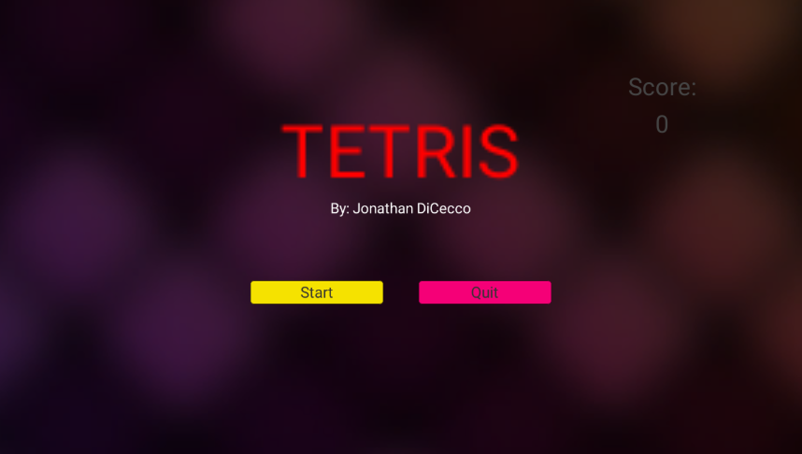

This is a clone of Tetris made in C# using Unity. It also includes features such as
progressive fall speed, ghost projections and a scoreboard. I also created a start menu
and a game over screen for the game.
Controls: S/Down: Soft Drop, A/Left: Left Shift, D/Right: Right Shift, W/Up: Hard Drop, Space:
Rotate

*Material textures are not mine. Credits can be found in the Github page
*Due to file limit sizes, only the 'Assets' Folder can be found on the Github page